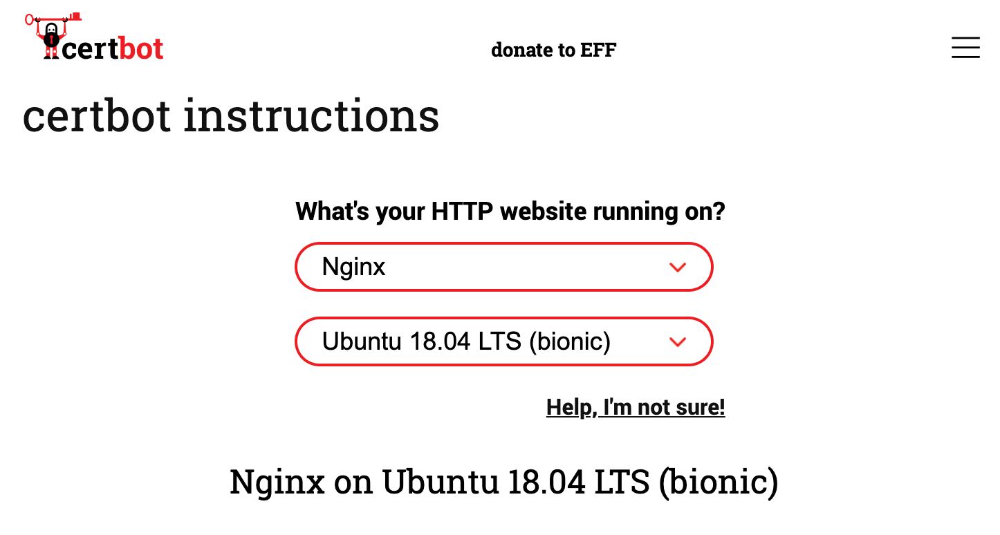
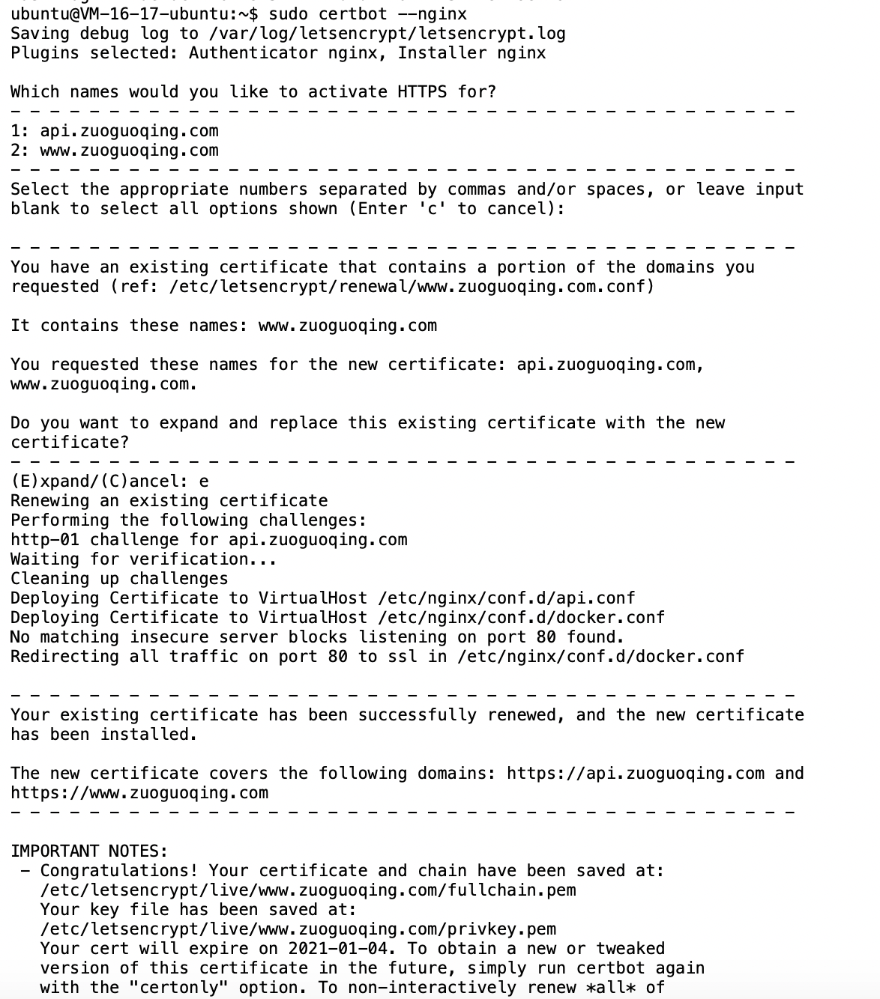

Let’s Encrypt 免费HTTPS证书
这篇文章发布于 2020/11/23，归类于 http与https
标签：
免费https，https
Let’s Encrypt 是一个非盈利TLS（Transport Layer Security) 证书颁发机构（CA），免费提供 https 证书。
由于 Let’s Encrypt 证书的有效期为 3 个月，所以一般使用程序来自动续期更换证书。官方推荐使用 Certbot 来管理，它可以一站式申请、续期证书。
在 Certbot 官网 选择部署服务器使用的软件及系统，会自动列出需要操作的步骤，如下图

注意文档里面分了两种：
- 单个域名，仅单个 https 比如
https://xx.com或https://www.xx.com - 通配符(Wildcard)证书，支持多个二级域名
https://*.xx.com，但不支持https://xx.com
一般我们写好 nginx.conf 的配置，certbot 会根据 server_name 自动识别域名，并申请安装证书
这里把两个域名进行 https 处理，分别是 https:/www.zuoguoqing.com 和 https://api.zuoguoqing.com
需要写两个 nginx 配置文件，分别对应下面两个文件，如果还有其他二级域名可以再增加配置文件
- /etc/nginx/conf.d/docker.conf 这里是 www 二级域名
- /etc/nginx/conf.d/api.conf 这里是 api 二级域名的nginx配置
# /etc/nginx/conf.d/docker.conf
server
{
listen 80;
server_name www.zuoguoqing.com;
}
# /etc/nginx/conf.d/api.conf
server
{
listen 80;
server_name api.zuoguoqing.com;
}开始安装 certbot，并执行
# 登录到 ubuntu linux 服务器
sudo apt update
sudo apt install snapd
sudo snap install core; sudo snap refresh core
sudo apt-get remove certbot
sudo dnf remove certbot
sudo snap install --classic certbot
sudo ln -s /snap/bin/certbot /usr/bin/certbot
# 获取并安装证书
sudo certbot --nginx
# 测试续订
sudo certbot renew --dry-run3个月有效期自动续订测试，提示了个 Python 3.8 OSError: [Errno 101] Network is unreachable，但提示又是续订测试成功。只有后面再看是否有问题
来看看 certbot 自动修改的 nginx 配置，会有 managed by Certbot 注释，后面我又加了一些基本的重定向配置
/etc/nginx/conf.d/docker.conf
# /etc/nginx/conf.d/docker.conf
server
{
server_name www.zuoguoqing.com;
location / {
# root html;
# index index.html index.htm;
proxy_pass http://127.0.0.1:3000;
}
listen 443 ssl http2; # managed by Certbot
ssl_certificate /etc/letsencrypt/live/www.zuoguoqing.com/fullchain.pem; # managed by Certbot
ssl_certificate_key /etc/letsencrypt/live/www.zuoguoqing.com/privkey.pem; # managed by Certbot
include /etc/letsencrypt/options-ssl-nginx.conf; # managed by Certbot
ssl_dhparam /etc/letsencrypt/ssl-dhparams.pem; # managed by Certbot
}
server
{
server_name zuoguoqing.com;
if ($host = zuoguoqing.com) {
return 301 https://www.$host$request_uri;
}
listen 443 ssl; # managed by Certbot
}
server
{
if ($host = zuoguoqing.com) {
return 301 https://www.$host$request_uri;
}
listen 80;
server_name zuoguoqing.com;
return 404;
}
server
{
if ($host = www.zuoguoqing.com) {
return 301 https://$host$request_uri;
} # managed by Certbot
listen 80;
server_name www.zuoguoqing.com;
return 404; # managed by Certbot
}/etc/nginx/conf.d/api.conf
# /etc/nginx/conf.d/api.conf
server
{
server_name api.zuoguoqing.com;
location / {
# root html;
# index index.html index.htm;
proxy_pass http://127.0.0.1:8700;
}
listen 443 ssl; # managed by Certbot
ssl_certificate /etc/letsencrypt/live/www.zuoguoqing.com/fullchain.pem; # managed by Certbot
ssl_certificate_key /etc/letsencrypt/live/www.zuoguoqing.com/privkey.pem; # managed by Certbot
include /etc/letsencrypt/options-ssl-nginx.conf; # managed by Certbot
ssl_dhparam /etc/letsencrypt/ssl-dhparams.pem; # managed by Certbot
}
server {
server_name api.zuoguoqing.com;
if ($host = 'api.zuoguoqing.com') {
return 301 https://$host$request_uri;
}
listen 80;
}参考: